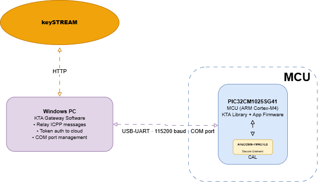
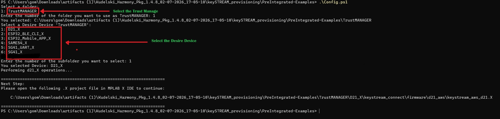
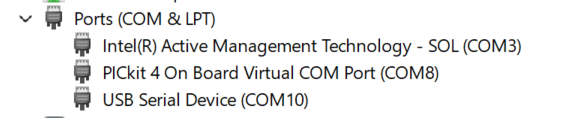
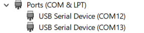

Integration guide for running the keySTREAM gateway over UART with the EV89U05A board and the ATECC608 TrustMANAGER secure element.

| Parameter | Value |
|---|---|
| Board | EV89U05A |
| MCU | PIC32CM1025SG41 |
| Secure Element | ATECC608-TMNGTLS |
| Transport | UART |
| Execution Model | Gateway-assisted provisioning |
| Item | Link |
|---|---|
| EV89U05A development board | Microchip EV89U05A |
| USB cable for board connection | Host PC to EV89U05A |
| Tool | Link |
|---|---|
| MPLAB X IDE | Download MPLAB X IDE |
| SG41 project sources | keystream_connect/keystream_connect.X |
| Gateway build scripts | SG41_UART_X\build_gateway.bat |
| MinGW GCC | Must be installed and on PATH — (to build kta_gateway.exe) |
Additional host tooling for the Windows gateway: MPLAB X IDE v6.30+ with XC32 v5.00+ (to build/flash the MCU). MinGW GCC must be installed and available on PATH before running build_gateway.bat — without it the gateway build will fail.
Before building or running this example, complete the following steps in the keySTREAM portal:
| Requirement | Description | Guide |
|---|---|---|
| Fleet Profile UID | Create a Fleet Profile and copy its public UID into App_Config.h | Fleet Profile Creation Guide |
This step must be completed before configuring
App_Config.hand building the project.
When cloning this repository, you may encounter issues related to long file paths on Windows. To avoid this, ensure you clone the repository to a short path (e.g., directly under C:\).
Before cloning, run the following command to enable support for long paths in Git:
Once this is set, you can proceed to clone the repository without path length issues.
Before building, clone the repository:
Then configure the firmware package using the provided script:
keySTREAM_provisioning\PreIntegrated-Examples in the package.\Config.ps1SG41_UART_X folder in your preferred path (e.g. C:\) and proceed to build and flashIf you encounter any error while running
Config.ps1, refer to the Config.ps1 — Troubleshooting & Usage guide.

App_Config.hat the project root is the single source of truth shared by both the SG41 firmware and the Windows gateway. Edit it once before building either side. After a successful gateway build, the executable is produced atgateway\kta_gateway.exe.
Open App_Config.h and update the required values before building:
| Macro | Description |
|---|---|
KEYSTREAM_DEVICE_PUBLIC_PROFILE_UID | Fleet profile UID provided from keySTREAM |
UART_COM_PORT | COM port as a wide string literal — L"COMx" |
UART_COM_PORT_STR | COM port as a narrow string literal — "COMx" |
Both macros must name the same physical COM port. UART_COM_PORT uses the wide-string form (L"COMx") and UART_COM_PORT_STR uses the standard narrow-string form ("COMx").
Win + X and open Device Manager.Depending on the board and installed drivers, Device Manager will show one of the two cases below — identify which one applies before moving to Step 2.
Case A — PICkit virtual COM port is listed

If you see PICkit 4 On Board Virtual COM PORT, use that COM port.
Case B — Only USB Serial Device is listed

If the board is connected but no PICkit entry appears, only a USB Serial Device port will be listed, as shown above. In that case, use the USB Serial Device COM port instead.
If Device Manager shows COM5, set the macros as follows:
Re-check Device Manager after reconnecting the board — Windows may assign a different COM port number. Update both macros whenever the port changes.
keystream_connect/keystream_connect.X.SG41_UART_X and run build_gateway.bat to build the UART gateway.App_Config.h.gateway\kta_gateway.exe.After the gateway starts, it opens the configured COM port, reads the secure element UID, and drives the keySTREAM provisioning exchange. A successful run looks like:
After onboarding, the gateway enters a monitoring loop (periodic keep-alive to the cloud) and stays running until stopped with Ctrl+C.
App_Config.h has your KEYSTREAM_DEVICE_PUBLIC_PROFILE_UID and the correct UART_COM_PORT / UART_COM_PORT_STR.BUILD SUCCESSFUL) and flashes (Programming Succeeded).build_gateway.bat produces gateway\kta_gateway.exe.App_Config.h matches the SG41 port shown in Device Manager.Status: ONBOARDED.| Problem | Recommended Action |
|---|---|
| UART failed to open the COM port | Reconnect the board, confirm the COM port in Device Manager, and reinstall or update the USB UART driver if needed |
| "No device found" in MPLAB X | Check the USB connection, refresh connected tools, and restart MPLAB X |
| SG41 flashing fails | Power-cycle the board and repeat the flash operation |
| Gateway cannot find the SG41 board | Verify the configured COM port and ensure no other tool is holding the serial port open |
| Provisioning times out | Wait at least 30 seconds and confirm the network connection used by the gateway |
| Gateway stalls during exchange | The ATECC608 operation can take longer; allow up to 60 seconds before retrying |
Two separate serial ports are used on this target:
| Port | Role |
|---|---|
| COM4 (SERCOM6 UART) | Binary KTA bridge data — used by the gateway .exe. Do not open this port for logs. |
| USB-CDC console port | All text logs: [UART-Bridge] status messages, KTA [DEBUG]/[INFO] output, hex dumps. |
Locate ktaConfig.h — after running Config.ps1, the file is generated at:
Open it, find the LOG LEVEL CONFIGURATION - USER SECTION, and uncomment the LOG_KTA_ENABLE line:
Available log levels:
| Value | Level | Shows |
|---|---|---|
C_KTA_LOG_LEVEL_DEBUG | 1 | DEBUG and everything above |
C_KTA_LOG_LEVEL_INFO | 2 | INFO, WARN, ENTRY/EXIT, ERROR |
C_KTA_LOG_LEVEL_WARN | 3 | WARN, ENTRY/EXIT, ERROR |
C_KTA_LOG_LEVEL_ENTRY_EXIT | 4 | ENTRY/EXIT, ERROR |
C_KTA_LOG_LEVEL_ERROR | 5 | ERROR only |
C_KTA_LOG_LEVEL_NONE | 6 | No logs |
C_KTA_LOG_LEVEL_DEBUG shows everything from DEBUG upwards. Rebuild and reflash the keystream_connect MCU firmware after changing the log level.
Launch the gateway .exe on COM4 simultaneously so the MCU executes KTA operations and produces log output.
Note: KTA logs are printed via
SYS_CONSOLEon the USB-CDC port — notprintf, which is a no-op stub on this target because SERCOM6 is reserved for the UART bridge.
| Problem | Recommended Action |
|---|---|
| Hex dumps look truncated | Increase SYS_CONSOLE_PRINT_BUFFER_SIZE and the USB-CDC write buffer size in configuration.h, then rebuild and reflash |
| No output on USB-CDC port | Confirm you opened the correct port (not COM4) and that the baud rate is 115200 |